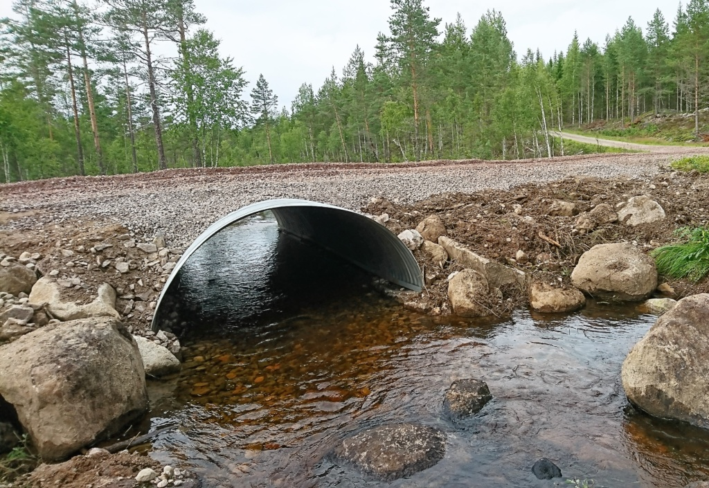

Valvbågar i korrugerat stål står på fundament och lämnar botten orörd. Färdiga bågar upp till 3,6 m – och bultade bågar i valfri form och storlek.
Tillverkade i Sverige av varmförzinkat stål.
Bågen står på fundament vid sidorna av vattendraget – botten lämnas orörd och fisk och fauna passerar fritt.
Större bågar levereras i plåtsektioner som bultas ihop på plats – enkel transport även för stora spann.
Valvbågar med spännvidd 1000–3600 mm levereras färdiga i ett stycke, klara att lyfta på plats. Höjden är halva spännvidden och måtten nedan är innermått.
De flesta valvbågar beställs med spännvidd 1000 eller 1200 mm – och däröver i jämna steg om 200 mm. Det är standardsortimentet som tabellen visar. De vanligaste valen av godstjocklek och korrugering är gulmarkerade.
Allt tillverkas på beställning – mellanliggande spännvidder och andra godstjocklekar går lika bra. Större spann eller en annan form? Se bultade valvbågar nedan.
Visar 14 standardstorlekar 1100, 1300, 1500 … 3500 mm ingår inte i standardsortimentet och är dolda. Visar alla 27 storlekar Randade rader märkta Ej standard ingår inte i standardsortimentet – kontakta oss för pris och leveranstid.
| Spännviddmm | Höjdmm | Aream² | Korr.mm | Godsmm | ~Viktkg/m |
|---|---|---|---|---|---|
| 1000 | 500 | 0,40 | 68×13125×26 (vanligast) | 1,52,0 (vanligast)2,5 | ~23~30~38 |
| 1100Ej standard | 550 | 0,47 | 68×13125×26 (vanligast) | 1,52,0 (vanligast)2,5 | ~25~33~42 |
| 1200 | 600 | 0,56 | 68×13125×26 (vanligast) | 1,52,0 (vanligast)2,5 | ~27~36~45 |
| 1300Ej standard | 650 | 0,67 | 68×13125×26 (vanligast) | 1,52,0 (vanligast)2,53,03,5 | ~30~39~49~59~69 |
| 1400 | 700 | 0,77 | 68×13125×26 (vanligast) | 1,52,02,5 (vanligast)3,03,5 | ~32~42~53~63~74 |
| 1500Ej standard | 750 | 0,89 | 68×13125×26 (vanligast) | 1,52,02,5 (vanligast)3,03,5 | ~34~45~57~68~79 |
| 1600 | 800 | 1,00 | 125×26 | 2,02,53,0 (vanligast) | ~48~60~72 |
| 1700Ej standard | 850 | 1,14 | 125×26 | 2,02,53,0 (vanligast) | ~51~64~77 |
| 1800 | 900 | 1,27 | 125×26 | 2,02,53,0 (vanligast)3,5 | ~54~68~81~95 |
| 1900Ej standard | 950 | 1,42 | 125×26 | 2,02,53,0 (vanligast)3,5 | ~57~72~86~100 |
| 2000 | 1000 | 1,57 | 125×26 | 2,02,53,0 (vanligast)3,5 | ~60~75~90~105 |
| 2100Ej standard | 1050 | 1,73 | 125×26 | 2,53,0 (vanligast)3,5 | ~79~95~111 |
| 2200 | 1100 | 1,90 | 125×26 | 2,53,0 (vanligast)3,5 | ~83~99~116 |
| 2300Ej standard | 1150 | 2,08 | 125×26 | 2,53,0 (vanligast)3,5 | ~87~104~121 |
| 2400 | 1200 | 2,26 | 125×26 | 2,53,0 (vanligast)3,5 | ~90~108~126 |
| 2500Ej standard | 1250 | 2,46 | 125×26 | 2,53,0 (vanligast)3,5 | ~94~113~132 |
| 2600 | 1300 | 2,65 | 125×26 | 2,53,0 (vanligast)3,5 | ~98~117~137 |
| 2700Ej standard | 1350 | 2,87 | 125×26 | 2,53,0 (vanligast)3,5 | ~102~122~142 |
| 2800 | 1400 | 3,08 | 125×26 | 2,53,0 (vanligast)3,5 | ~105~126~148 |
| 2900Ej standard | 1450 | 3,31 | 125×26 | 2,53,0 (vanligast)3,5 | ~109~131~153 |
| 3000 | 1500 | 3,54 | 125×26 | 2,53,0 (vanligast)3,5 | ~113~135~158 |
| 3100Ej standard | 1550 | 3,77 | 125×26 | 2,53,0 (vanligast)3,5 | ~117~140~163 |
| 3200 | 1600 | 4,02 | 125×26 | 2,53,0 (vanligast)3,5 | ~120~144~169 |
| 3300Ej standard | 1650 | 4,28 | 125×26 | 2,53,0 (vanligast)3,5 | ~124~149~174 |
| 3400 | 1700 | 4,54 | 125×26 | 2,53,0 (vanligast)3,5 | ~128~153~179 |
| 3500Ej standard | 1750 | 4,81 | 125×26 | 2,53,0 (vanligast)3,5 | ~132~158~184 |
| 3600 | 1800 | 5,09 | 125×26 | 2,53,0 (vanligast)3,5 | ~135~162~190 |
| Större spann eller annan form? Bultade valvbågar byggs från 3 meter och uppåt → | |||||
Från cirka 3 meters spännvidd byggs valvbågen av korrugerade stålplåtar som bultas ihop på plats. Bredd, höjd och form väljs efter projektet – prova i skissen nedan.
Bågen vilar på fundament längs sidorna, vanligen av betong. Botten mellan fundamenten lämnas orörd – fisk och fauna passerar fritt. Hur mycket jord som behövs ovanpå beror på spännvidd, mark och trafiklast.
Bågarna är gjorda av varmförzinkat, korrugerat stål. Med extra zinkskikt eller plastbeläggning (polymerfilm, t.ex. Trenchcoat) nås livslängder på uppemot 100 år – se livslängdstabellen för våra ståltrummor.
För bultade valvbågar väljs korrosionsskyddet i projektet, tillsammans med plåt och godstjocklek.
Botten störs så lite som möjligt och återskapas med block och sten i olika storlekar, så att fisk kan vandra. Erosionsskydd med natursten är en viktig del av arbetet.
Valvbågen bevarar den naturliga botten och passar där ett rör blir ett hinder:
Alla valvbågar görs på beställning. Skicka spännvidd, önskad höjd och hur det ser ut på platsen, så hjälps vi åt att ta fram rätt lösning, pris och leveranstid.